Animating the Clinical Source Code
of Disease Progression for Medical World Models

Overview
Medical world models should describe how disease state evolves under candidate interventions. ClinicalCode uses a typed, executable representation for anatomy, lesions, imaging phenotype, clinical context, time, uncertainty, missingness, and provenance.
Compilers build this state from CT, MRI, and pre-decision observations. An action-conditioned dynamics model rolls the state forward, while validation checks expose inconsistent fields and temporal changes. A calibrated decoder then connects the trajectories to documented treatment actions.
This explicit interface lets researchers inspect individual variables, edit a state, and distinguish errors in perception, state evolution, and treatment decoding. The framework is evaluated across CT treatment planning and longitudinal glioma MRI.
What the representation makes explicit
- A clinical state you can read. Anatomy, lesion geometry, imaging phenotype, and context are represented with explicit types, units, and sources.
- Actions condition the future. Candidate interventions produce separate trajectories over the same shared clinical-state interface.
- Every change has a place. Missing observations, predicted fields, and uncertainty stay visible throughout the rollout.
- Validate before decoding. Schema and temporal checks precede the calibrated mapping from trajectories to documented treatment actions.
Video demonstration
Real CT and matching reference masks anchor the walkthrough. State evolution is a schematic, rule-driven illustration.

Explore a liver lesion in 4D
Liver lesion · arterial CT
Real baseline anatomyIllustrative state evolution
CT
Parsing
reference masksClinicalCode
state.json{
"anatomy": {
"organ": "liver",
"source": "reference_mask"
},
"lesion": {
"id": "lesion_1",
"baseline_ml": 72.384,
"volume_ml": 63.171, "necrotic_fraction": 0.456, "viability_proxy": 0.582 },
"action": "action_1",
"time_days": 45,
"uncertainty_proxy": 0.160, "provenance": {
"baseline": "CT + masks",
"slice_index": 32,
"dynamics": "illustrative"
}
}Move the time slider or choose an action. State fields and the 3D lesion update together.
Simulation
Illustrative state · day 45Coral: lesion shell · blue-grey: illustrative necrotic core
Baseline surfaces come from the CT reference masks. Future volume, tissue composition, and uncertainty visualize the existing rule-contract states; the interior core is a schematic encoding, not a measured necrosis map or a patient forecast.
The interactive renderer could not start. Watch the video or inspect the example states.
A field is more than a value.
Each state field carries its type and unit, observability, uncertainty, source, and mutability. An unobserved quantity stays missing.
Illustrative schema excerpt. The missing volume is deliberate; this example contains no patient measurements.
// An inspectable field in a ClinicalCode state
{
"lesion.volume": {
"value": null,
"type": "float",
"unit": "mL",
"observability": "missing",
"uncertainty": null,
"source": null,
"mutability": "mutable"
}
}Compile
Ground the clinical state in imaging tools and pre-decision context.
Roll forward
Predict changes to mutable fields for each candidate action.
Validate
Check types, units, bounds, time, and provenance.
Decode
Map validated trajectories to documented treatment actions.

Framework figure from the manuscript. Open the figure to inspect its details.
SomaAtlas asset library
Anatomical models, CT and MRI label surfaces, and tissue mechanics. Select an asset to inspect it in 3D and access the source files.
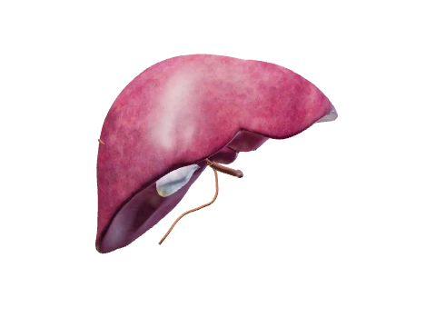
Hepatobiliary anatomyAnatomical atlas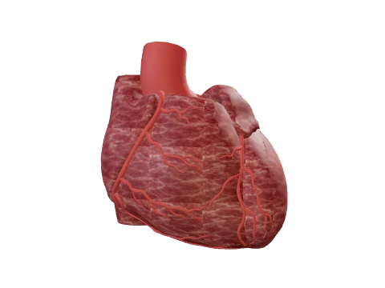
HeartAnatomical atlas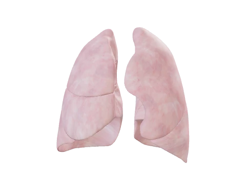
LungsAnatomical atlas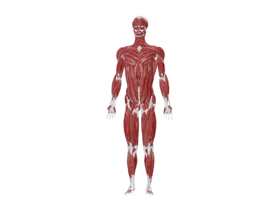
Muscular systemAnatomical atlas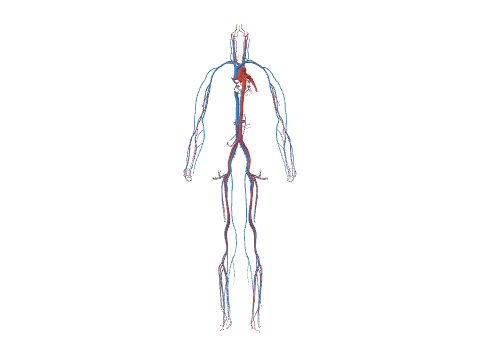
Major vesselsAnatomical atlas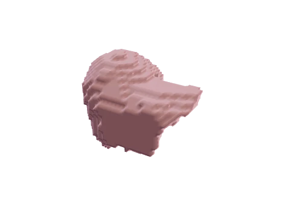
Liver contact modelTissue mechanics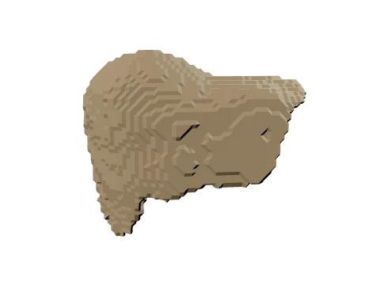
LiverCT surface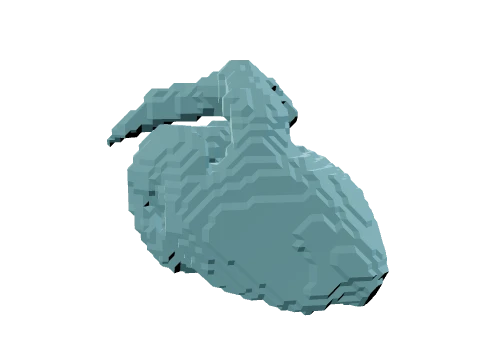
HeartCT surface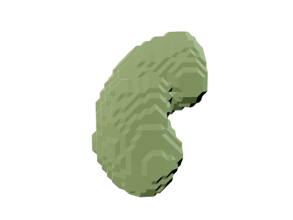
Kidney rightCT surface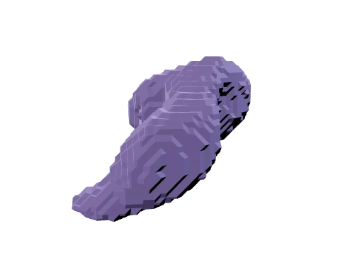
StomachCT surface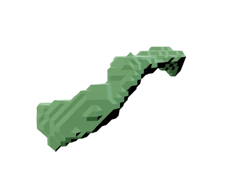
PancreasCT surface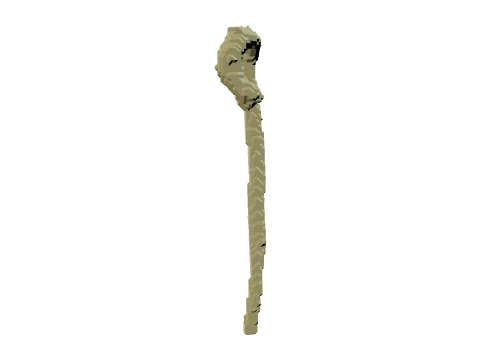
AortaCT surface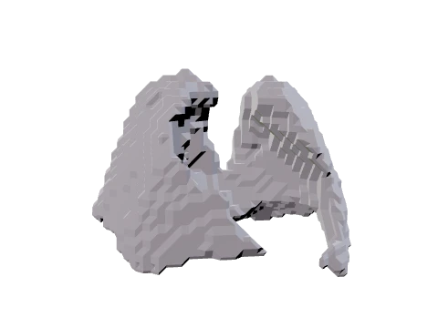
LungsMRI atlas surface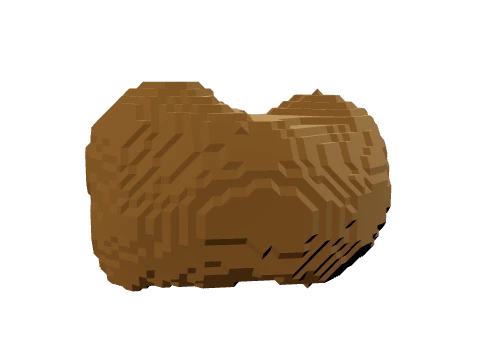
LiverMRI atlas surface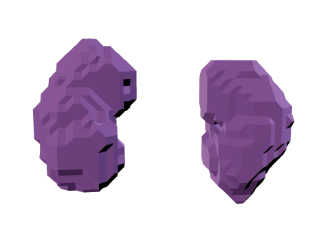
Kidney parenchymaMRI atlas surface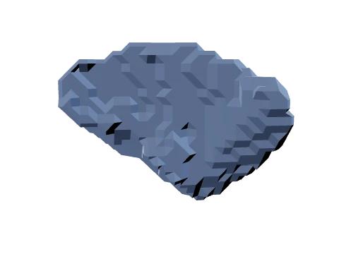
SpleenCT surface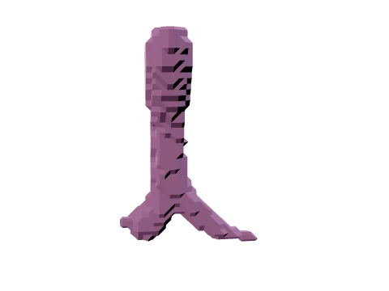
TracheaCT surface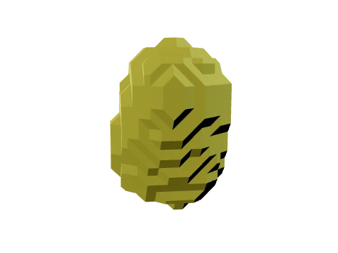
BladderMRI atlas surface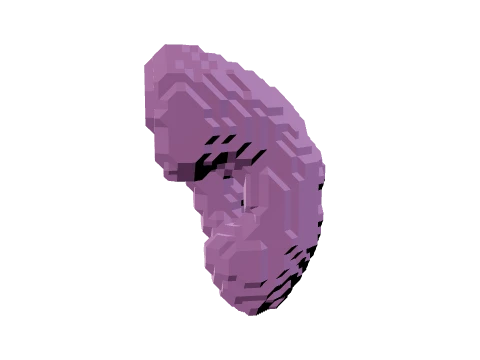
Kidney leftCT surface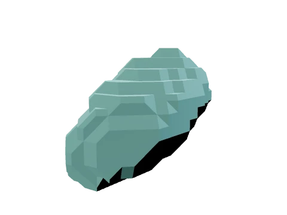
GallbladderCT surface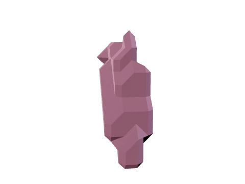
Adrenal gland rightCT surface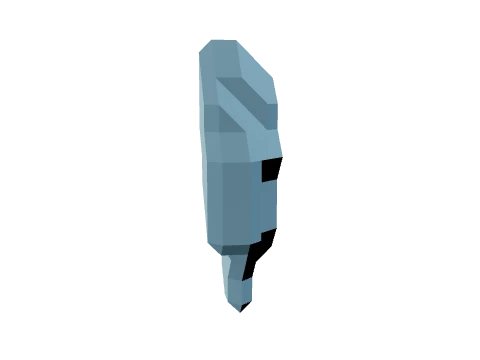
Adrenal gland leftCT surface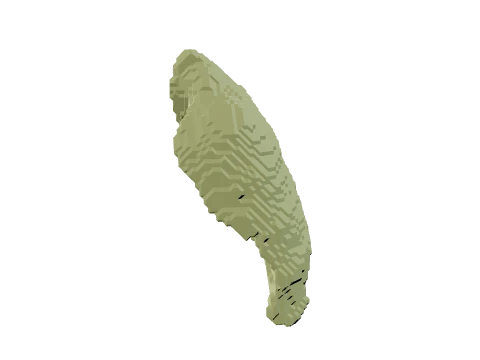
Lung upper lobe leftCT surface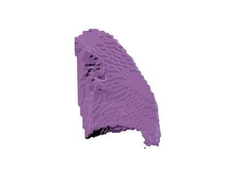
Lung lower lobe leftCT surface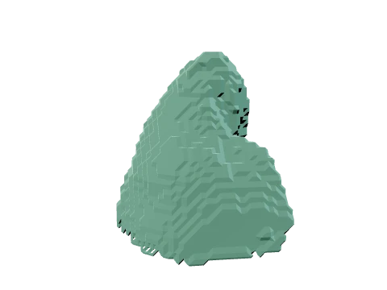
Lung upper lobe rightCT surface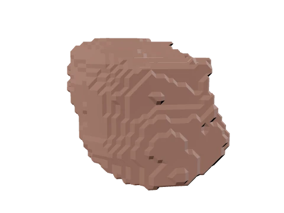
Lung middle lobe rightCT surface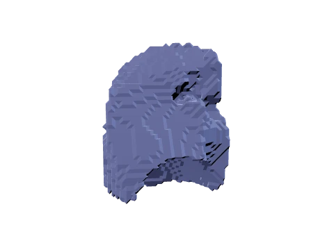
Lung lower lobe rightCT surface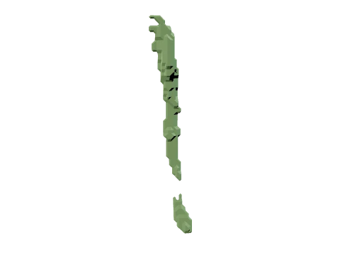
EsophagusCT surface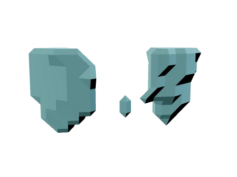
Thyroid glandCT surface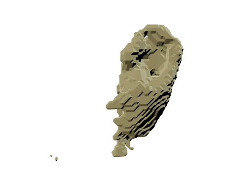
Small bowelCT surface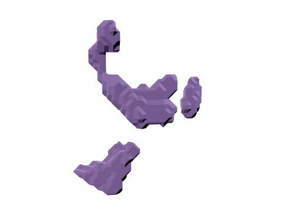
DuodenumCT surface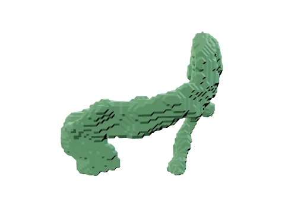
ColonCT surface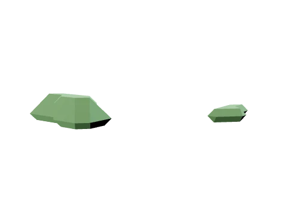
Vertebra L4CT surface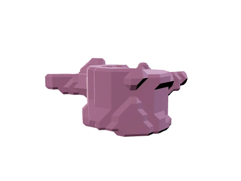
Vertebra L3CT surface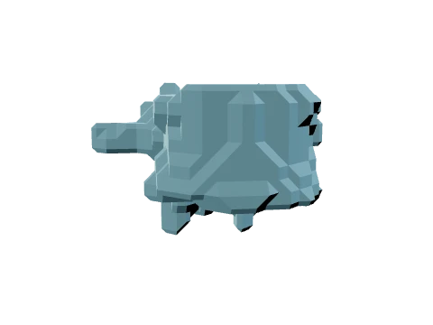
Vertebra L2CT surface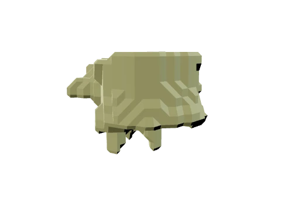
Vertebra L1CT surface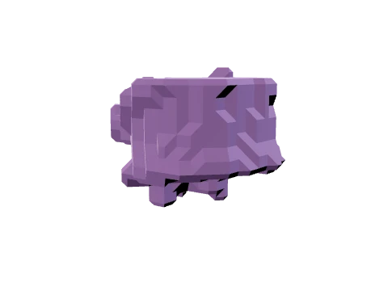
Vertebra T12CT surface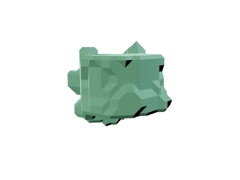
Vertebra T11CT surface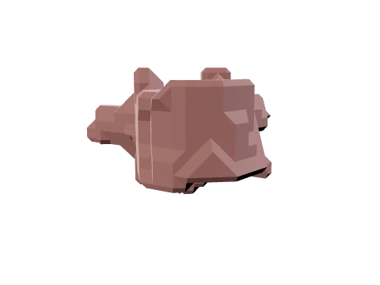
Vertebra T10CT surface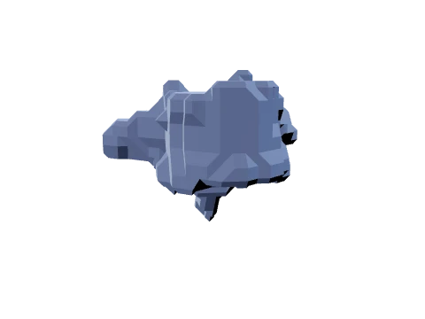
Vertebra T9CT surface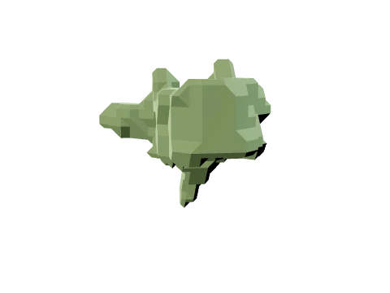
Vertebra T8CT surface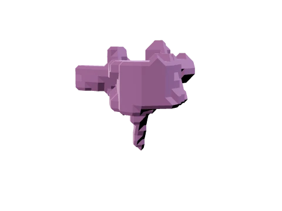
Vertebra T7CT surface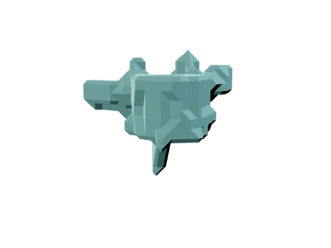
Vertebra T6CT surface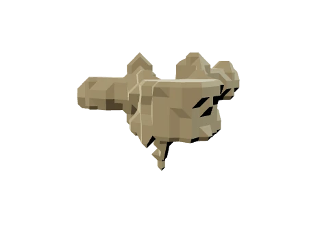
Vertebra T5CT surface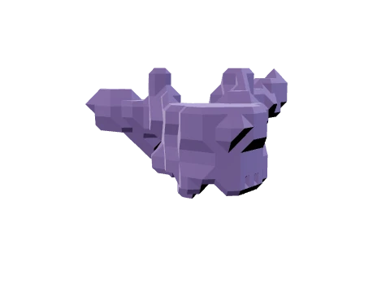
Vertebra T4CT surface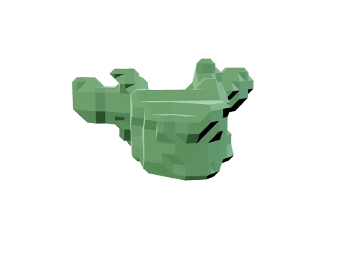
Vertebra T3CT surface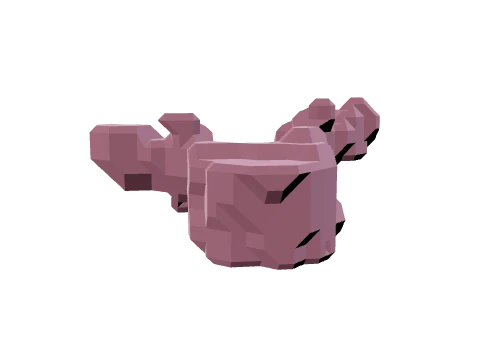
Vertebra T2CT surface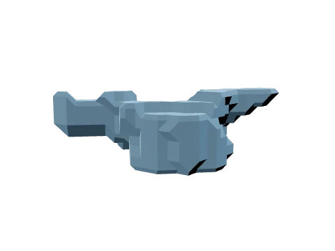
Vertebra T1CT surface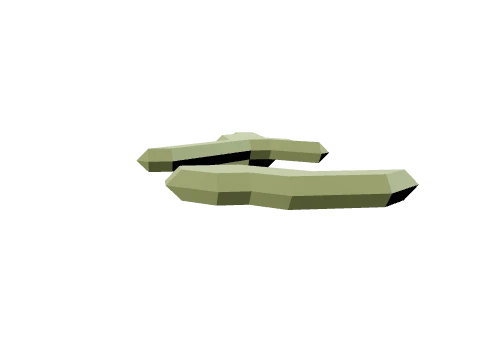
Vertebra C7CT surface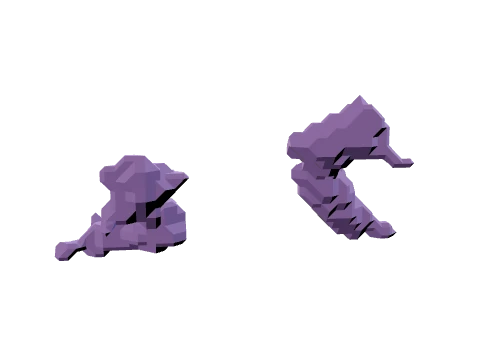
Pulmonary veinCT surfaceBrachiocephalic trunkCT surfaceSubclavian artery rightCT surfaceSubclavian artery leftCT surfaceCommon carotid artery rightCT surfaceCommon carotid artery leftCT surfaceBrachiocephalic vein leftCT surfaceBrachiocephalic vein rightCT surfaceAtrial appendage leftCT surfaceSuperior vena cavaCT surfaceInferior vena cavaCT surfacePortal vein and splenic veinCT surfaceHumerus leftCT surfaceHumerus rightCT surfaceScapula leftCT surfaceScapula rightCT surfaceClavicle leftCT surfaceClavicle rightCT surfaceSpinal cordCT surfaceAutochthon leftCT surfaceAutochthon rightCT surfaceIliopsoas leftCT surfaceIliopsoas rightCT surfaceRib left 1CT surfaceRib left 2CT surfaceRib left 3CT surfaceRib left 4CT surfaceRib left 5CT surfaceRib left 6CT surfaceRib left 7CT surfaceRib left 8CT surfaceRib left 9CT surfaceRib left 10CT surfaceRib left 11CT surfaceRib left 12CT surfaceRib right 1CT surfaceRib right 2CT surfaceRib right 3CT surfaceRib right 4CT surfaceRib right 5CT surfaceRib right 6CT surfaceRib right 7CT surfaceRib right 8CT surfaceRib right 9CT surfaceRib right 10CT surfaceRib right 11CT surfaceRib right 12CT surfaceSternumCT surfaceCostal cartilagesCT surfaceStomachMRI atlas surfaceSpleenMRI atlas surfaceKidney pelvisMRI atlas surfaceThymusMRI atlas surfaceGallbladderMRI atlas surfaceAdrenal glandsMRI atlas surfaceNo assets match this search.
CT surfaces use automatic labels; MRI surfaces come from a fetal population atlas. Sources and asset terms.
Results
Treatment-action prediction results reported in the manuscript. CT and MRI have separate cohorts and evaluation protocols.
| Method / configuration | Internal F1 ↑ | External F1 ↑ |
|---|
Evaluation context
The tables measure agreement with documented treatment actions. They do not establish causal treatment benefit. The MRI external result uses the official UCSF test partition with no UCSF fitting or calibration. CT single-model and ensemble configurations are listed separately. Interactive demo values are illustrative and do not contribute to these scores.
Citation
@misc{chen2026clinicalcode,
title = {Animating the Clinical Source Code of Disease
Progression for Medical World Models},
author = {Chen, Qi and Yuille, Alan L. and Chen, Jieneng},
year = {2026},
note = {Research manuscript},
url = {https://qic999.github.io/projects/ClinicalCode/}
}